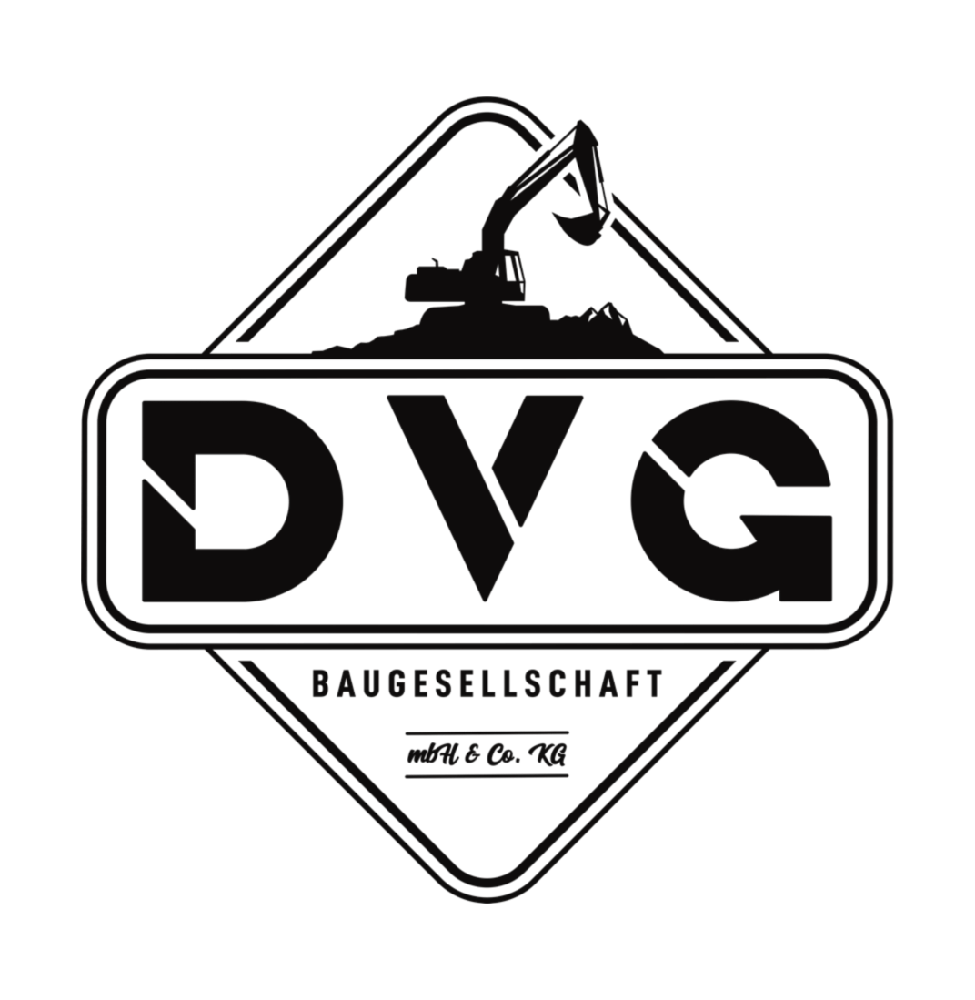

Grundlagen abstimmen
Nutzung, Maße und vorhandene Planung gemeinsam besprechen.

Betonarbeiten schaffen die Grundlage für viele Bauvorhaben. Wir stimmen die benötigten Leistungen mit Ihnen ab und setzen sie als Teil Ihres Projekts in Schleswig-Holstein um.
Projekt besprechenWAS WIR FÜR SIE TUN
Vor der Ausführung klären wir, wofür das Bauteil oder die Fläche genutzt werden soll und welche Planung dafür vorliegt. Maße, Lage und die anschließenden Arbeiten werden gemeinsam abgestimmt.
Von der Vorbereitung über Schalung und Bewehrung bis zur Betonage betrachten wir die einzelnen Arbeitsschritte im Zusammenhang. Welche Ausführung zu Ihrem Vorhaben gehört, richtet sich nach der vereinbarten Planung und dem konkreten Umfang.
Nutzung, Maße und vorhandene Planung gemeinsam besprechen.
Die benötigte Ausgangssituation für die Betonarbeiten herstellen.
Die vereinbarten Bauteile und Flächen im Projektablauf ausführen.
ECHTE EINBLICKE. ECHTES HANDWERK.
Bewehrung und Betonage sowie Betonbauteile in Außenanlagen – verschiedene Phasen und Einsatzbereiche.
Weitere Projekte ergänzen wir nach und nach.
KLEINES VORHABEN ODER GROSSES PROJEKT?
Großharrie und ganz Schleswig-Holstein.
Ihr kostenloses Erstgespräch ist der Anfang.